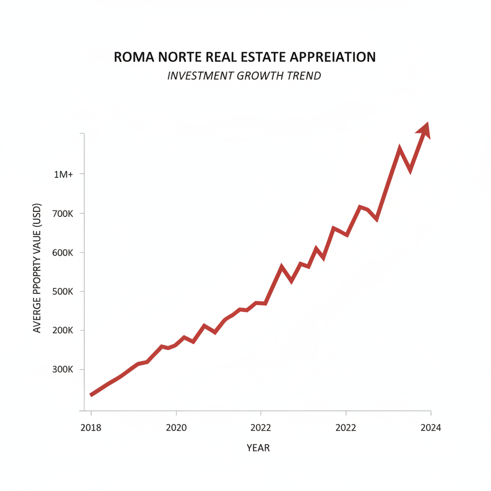

Architectural Guide 2026
Mastering Roma Norte: A Legacy Built on Lakebed, Reimagined for Global Capital
You've witnessed the allure of Roma Norte on screen; now, understand the precision required to claim a piece of its Porfirian legacy. We bridge the rigorous standards of US NCARB/AIA engineering with the nuanced realities of Mexico City's urban fabric, meticulously transforming historical assets into high-performing 2026 investments.

The Resident Architect's View
I confess, I often find myself drifting east from my usual walks around Amsterdam Avenue, pulled by the distinct hum of Roma Norte. It’s not the refined quietude of Condesa’s tree-lined promenades, but a symphony of ambition and legacy. There’s a particular quality of late afternoon light on a Porfirian façade along Colima, turning the stone a deep ochre, that always makes me pause. Even amidst the rhythmic call of the 'gasero' at dawn or the high-pitched whistle of the sweet potato vendor, you sense the echoes of a grander past, now reimagined for a discerning future. I’ve come to appreciate the elegant defiance of those original thick, unreinforced masonry walls—a natural acoustic buffer against the inevitable murmur of a thriving global city, a secret a true resident learns to value.

Erik Martínez, AIA
Principal Architect. Former SHoP Architects NYC. Bringing international precision to CDMX's most complex heritage assets.
Iconic Landmarks
- Avenida Álvaro Obregón
- Calle Colima
- Calle Orizaba
- Plaza Río de Janeiro
- Plaza Luis Cabrera
Roma Norte: Where Porfirian Grandeur Meets Global Capital
Colonia Roma Norte, once a visionary Porfirian residential enclave, has transcended its origins to become Mexico City's premier destination for global capital and the international expatriate elite. In 2026, this neighborhood defines the convergence of meticulous heritage preservation and high-density, 'lifestyle' redevelopment. It is a market characterized by a structural housing deficit, positioning it as a 'recession-proof' hub that consistently commands a significant premium, even as the broader Mexico City market has stabilized. The modern resident here experiences a synthesis of historical aesthetics and cutting-edge functionality, a testament to thoughtful, high-end renovation.
The Architectural Canvas: Heritage and High-Density Lifestyle
The financial profile of Roma Norte in early 2026 is anchored by exceptional rental yield performance, particularly in the short-term and medium-term markets. Return on Investment (ROI) for renovated 'lifestyle' properties ranges from a benchmark cap rate of 6.5% to 8.0%, significantly outperforming the city-wide average. This is fueled by a dual demographic: high-spending tourists and a robust digital nomad economy. Market preference favors mid-market, well-connected central units. For instance, renovated two-bedroom apartments are projected to appreciate by 6% to 8% over 2026, while renovated heritage lofts can see gains of up to 8.5%. This shift has driven an investment strategy toward 'value-add' acquisitions, targeting older structures with sound seismic foundations for deep renovation, rather than paying the 12% premium associated with new construction. This trend is particularly evident on the southern boundary, where Roma Sur is experiencing a 'spillover effect,' with appreciation rates reaching 12% year-over-year as the market gap narrows.
The Geological Truth: Building on Zone III
The fundamental reality of building or renovating in Roma Norte begins beneath the surface. This entire neighborhood is situated within Zone III (Lakebed Zone), Mexico City's most geotechnically challenging area. The sub-soil consists of soft clay alluvial deposits extending up to 1,200 meters deep, acting as a natural amplifier for seismic waves. With S-wave velocities as low as 70 m/sec and a fundamental period of 2.9 seconds, the risk of resonance in mid-rise structures is a critical design consideration. The catastrophic 2017 earthquake starkly revealed the vulnerability of unreinforced masonry in this zone. Consequently, new construction carries a significant 12% price premium, primarily due to the stringent modern seismic standards required.
For our international clientele, a detailed structural census and a vulnerability class assessment (A-F) by a certified engineer are not merely recommendations but prerequisites for any 'renovated shell' acquisition. We specialize in seismic retrofitting techniques, often incorporating carbon fiber wrapping and friction piles designed to reach deeper, firmer strata. To eliminate the pervasive 'Gringo Tax'—where foreign nationals are often quoted significantly inflated prices—we operate on a transparent 'percentage of cost' model for contractors, typically 20% to 30% of materials and labor. This ensures alignment with fair market rates, which for luxury 'lifestyle' renovations range from MXN 30,000 to 50,000 per m² (USD $1,680 - $2,800), and guarantees adherence to US NCARB/AIA rigorous engineering standards, marrying safety with fiscal prudence.
Navigating the Guardians: INAH and INBAL
Roma Norte’s distinctive charm is intrinsically linked to its architectural heritage. Preservation here is governed by two powerful federal bodies: the INAH (National Institute of Anthropology and History) for colonial-era structures (though less prevalent here) and, crucially for Roma Norte, the INBAL (National Institute of Fine Arts and Literature) for buildings constructed from the 20th century onward. The primary heritage corridor encompasses Avenida Álvaro Obregón, Calle Colima, and Calle Orizaba, with the highest density of 'Catalogued' properties surrounding Plaza Río de Janeiro and Plaza Luis Cabrera. These are not merely addresses; they are 'Blue Chip' historical assets.
Renovating a catalogued property in Roma Norte is a precise art, not a freehand exercise. To pass a heritage inspection, adherence to a strict set of aesthetic constraints is mandatory, which can significantly inflate renovation costs. For instance, original wood or wrought iron window frames cannot be replaced with aluminum; modern steel or high-end treated wood replicas are required. Paint colors must be selected from a pre-approved historical catalog, often excluding vibrant or modern hues. Any alteration to the placement or size of windows, balconies, or doorways is generally prohibited, preserving the original 'façade rhythm.' In 'Highly Protected' (Level 1) buildings, even interior features like marble staircases, stained glass, and ceiling moldings must be preserved or restored rather than replaced. These are the Heritage Hurdles that demand an expert architectural hand to ensure compliance and avoid costly 'Clausurado' (stoppage) orders.
Water Resilience: From Cutzamala Crisis to Sustainable Supply
Water security remains a paramount infrastructure consideration in the Valley of Mexico. Roma Norte, historically part of the 'water-stressed' core, experienced critical conditions during the 2024 drought when the Cutzamala System fell to a precarious 26% capacity. However, early 2026 brings significantly improved prospects: a historic rainy season in 2025 has restored the Cutzamala reservoirs to an impressive 97.4% capacity—the highest in a decade—providing a stable supply through at least 2027. Furthermore, a 680 million MXN upgrade to the Cutzamala System is 20% complete as of February 2026, focusing on replacing 40-year-old pumping units and implementing SCADA automation. Despite this macro recovery, localized shortages persist due to the aging city network, which loses nearly half its volume to leaks caused by ground subsidence. For any 'lifestyle' property in Roma Norte, we consider a minimum 10,000-liter cistern for a single-family home, or 2,500 liters per bedroom in multi-unit buildings, to be an essential 'life-insurance' policy, ensuring 3-5 days of autonomous supply during inevitable network repairs or localized events.
Architectural Feasibility: Roma Norte 2026
| Project Type | Avg. Permit Time | Seismic Risk Level | Conservation Status |
|---|---|---|---|
| Deep Heritage Renovation | 18 - 36 Months | Moderate (INBAL/INAH, Cost Inflation) | Highly Regulated (Zone III) |
| Modern Infill Development (H/3/20) | 12 - 24 Months | High (12% Premium, Public Contributions) | Stringent (SEDUVI, DRO Liability) |
| Strategic Value-Add (Roma Sur) | 12 - 18 Months | Moderate (Renovation Cost, Localization) | Emerging Opportunity (12% YoY Appreciation) |
Beyond Aesthetics: The Modern Roma Norte Renovation
Restoring a Roma Norte property is an exercise in Invisible Modernization, meticulously preserving its historical soul while integrating 2026 functionality. Given the neighborhood's 'noisy' urban environment, architectural solutions for soundproofing are a prerequisite. We specify double-glazed acoustic windows, typically 6mm + 12mm air + 6mm laminated glass, as the standard for street-level noise mitigation. Interior walls are retrofitted with high-density mineral wool and Mass-Loaded Vinyl (MLV) for units adjacent to common areas. For new builds, structural isolation with resilient underlays is crucial. Power stability, while generally sound from the municipal grid, demands a complete electrical modernization, including surge protection and dedicated circuits for modern HVAC systems, in any heritage building. Furthermore, the cost of upgrading a historical building for modern electrical and water loads, including a $2,700 USD 1-inch culinary water connection, represents a significant 'lifestyle tax' that must be factored into comprehensive budgeting.
Crafting the Roma Norte Interior: Sophistication and Serenity
Our interior philosophy for Roma Norte balances the gravitas of its Porfirian heritage with the demands of an ultra-high-net-worth lifestyle. We emphasize open, light-filled spaces that honor original volumes while incorporating advanced climate control, smart home technology, and bespoke finishes. Material selection is critical, favoring natural elements like local cantera stone and artisanal woodwork, harmonizing with a refined, contemporary aesthetic. The aim is to create interiors that are both visually stunning and profoundly quiet, offering a serene refuge from the city's pulse—a premium feature that can command a 10-15% premium in nightly rental rates for the 'Lifestyle' demographic, proving that tranquility is a tangible asset.
The Roma Norte Cheat Sheet
- Best Streets Álvaro Obregón, Colima, Orizaba, Plaza Río de Janeiro
- Zoning Code H/3/20 (Habitacional), HM (Habitacional Mixto)
- Est. Cost / m² MXN 30k - 50k / m² (Luxury Finish)
- Best Coffee Café Curado
- Local Quirk The 'Decalogue against Noise' formed by residents in response to increasing nightlife acoustic pollution.
The Challenge
The investment landscape in Roma Norte presents a unique confluence of challenges for the sophisticated international investor: the potential for overpayment due to the pervasive 'Gringo Tax,' an underestimation of closing costs (which can add 5% to 12% to acquisition prices), and the administrative friction of permit timelines that can extend from 6 to 12 months—or even 18 months for catalogued heritage buildings—trapping capital in non-productive pre-development phases. Furthermore, the dense urban fabric translates to significant acoustic pollution and the persistent localized water shortages despite macro improvements, demanding specialized architectural interventions.
In the Cuauhtémoc Alcaldía, securing a permit is not a simple transaction. You file a Manifestación de Construcción, and the actual processing time is often 6 to 12 months. The ISAI (Impuesto Sobre Adquisición de Inmuebles), a progressive property transfer tax, typically ranges from 2% to 5% of the property’s appraised value, with high-value assets often triggering the upper bounds. Crucially, the DRO (Director Responsable de Obra), a certified engineer or architect, assumes personal and criminal liability for your building's structural integrity, ensuring adherence to the rigorous 2017 seismic building code and appropriate foundation systems for the challenging Zone III lakebed clay.
Our Solution
Our approach to Roma Norte investment is surgically precise: we target 'Deep Renovations' of historical shells with sound seismic foundations, bypassing the 12% premium of new construction. We integrate advanced acoustic solutions like double-glazed laminated glass and Mass-Loaded Vinyl, along with robust water storage systems (minimum 10,000-liter cisterns) to create properties that command a 10-15% premium in rental rates. To mitigate the 'Gringo Tax,' we utilize a radical transparency model: the 'percentage of cost' for contractors, ensuring fair market rates for luxury finishes (MXN 30,000 to 50,000 per m²) and preventing inflated quotes and quality compromises.
We specialize in navigating the complex regulatory environment, proactively engaging with SEDUVI and the heritage authorities (INAH/INBAL) to streamline permit timelines and ensure compliance with aesthetic mandates from the outset. By assembling a transparent professional network of trusted Notarios and certified DROs, we provide a secure legal and structural framework for every acquisition and development. This strategic, data-driven approach not only unlocks the compelling high cap rates (6.5%-8%) but also secures the long-term capital preservation inherent in Roma Norte's unique architectural legacy.


Planning to Buy?
Don't sign a contract before a technical audit. We offer pre-purchase structural assessments in Roma Norte.
2026 Cost Report
Get our detailed breakdown of current labor and material costs for luxury residential in CDMX.
Start Your Roma Norte Legacy
NYC Precision. Mexican Craft. We eliminate uncertainty for international investors.